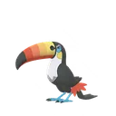
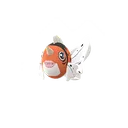
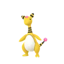
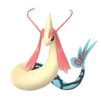
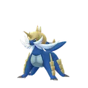
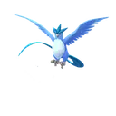
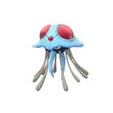
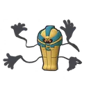
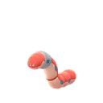

GO 對戰聯盟 · CP 2500
Pokémon GO 高級聯盟排名 Top 100
高級聯盟限制 CP 2500，是很多耐久型寶可夢與部分傳說寶可夢的舞台；不少寶可夢要用 XL 糖果升到 40 級以上才能接近上限。這份榜單依 PvPoke 對戰模擬的分數排序， 列出前 100 名寶可夢與推薦招式；想知道你手上那隻的 IV 排第幾，點右邊的「查 IV」直接帶入。
- 資料更新 2026-11-05
- 收錄 851 隻・顯示前 100 名
- 限定 限定招式
 1巨鍛匠妖精鋼94.3一般妖精之風特殊巨力錘限定重踏查 IV
1巨鍛匠妖精鋼94.3一般妖精之風特殊巨力錘限定重踏查 IV 2鋼鎧鴉飛行鋼93.9一般潑沙特殊空氣利刃限定鐵頭限定查 IV
2鋼鎧鴉飛行鋼93.9一般潑沙特殊空氣利刃限定鐵頭限定查 IV 3卡比獸暗影一般93.4一般精神波特殊泰山壓頂地震查 IV
3卡比獸暗影一般93.4一般精神波特殊泰山壓頂地震查 IV- 4鋼鎧鴉暗影飛行鋼93.2一般潑沙特殊空氣利刃限定以牙還牙查 IV
 5基格爾德（完全體）龍地面92.9一般龍尾特殊咬碎重踏查 IV
5基格爾德（完全體）龍地面92.9一般龍尾特殊咬碎重踏查 IV- 6畢力吉翁草格鬥92.3一般二連踢特殊葉刃聖劍限定查 IV
 7謎擬Ｑ幽靈妖精92.1一般暗影爪特殊影子偷襲嬉鬧查 IV
7謎擬Ｑ幽靈妖精92.1一般暗影爪特殊影子偷襲嬉鬧查 IV 8花潔夫人妖精92.0一般妖精之風特殊潑冷水限定魅惑之聲查 IV
8花潔夫人妖精92.0一般妖精之風特殊潑冷水限定魅惑之聲查 IV 9帝王拿波水鋼91.9一般金屬音特殊加農水砲限定啄鑽查 IV
9帝王拿波水鋼91.9一般金屬音特殊加農水砲限定啄鑽查 IV 10火焰鳥（伽勒爾）惡飛行91.9一般突襲特殊飛翔勇鳥猛攻查 IV
10火焰鳥（伽勒爾）惡飛行91.9一般突襲特殊飛翔勇鳥猛攻查 IV- 11帝王拿波暗影水鋼91.8一般金屬音特殊加農水砲限定啄鑽查 IV
 12美錄梅塔鋼91.7一般電擊特殊鋼拳雙擊限定爆裂拳查 IV
12美錄梅塔鋼91.7一般電擊特殊鋼拳雙擊限定爆裂拳查 IV- 13卡比獸一般91.7一般精神波特殊泰山壓頂地震查 IV
 14大力鱷暗影水91.4一般暗影爪特殊加農水砲限定冰凍光束查 IV
14大力鱷暗影水91.4一般暗影爪特殊加農水砲限定冰凍光束查 IV- 15大力鱷水91.3一般暗影爪特殊加農水砲限定冰凍光束查 IV
 16騎拉帝納（別種）幽靈龍91.2一般龍息特殊原始之力暗影潛襲限定查 IV
16騎拉帝納（別種）幽靈龍91.2一般龍息特殊原始之力暗影潛襲限定查 IV 17胖嘟嘟水幽靈91.1一般禍不單行特殊衝浪暗影球查 IV
17胖嘟嘟水幽靈91.1一般禍不單行特殊衝浪暗影球查 IV 18惡食大王惡龍91.0一般龍尾特殊狂舞揮打污泥炸彈查 IV
18惡食大王惡龍91.0一般龍尾特殊狂舞揮打污泥炸彈查 IV 19古月鳥飛行水90.8一般啄特殊潛水飛翔查 IV
19古月鳥飛行水90.8一般啄特殊潛水飛翔查 IV- 20骨紋巨聲鱷火幽靈90.5一般燒盡特殊閃焰高歌暗影球查 IV
 21拉普拉斯水冰90.4一般精神波特殊泡影詠歎調冰凍光束限定查 IV
21拉普拉斯水冰90.4一般精神波特殊泡影詠歎調冰凍光束限定查 IV- 22拉普拉斯暗影水冰90.3一般精神波特殊泡影詠歎調冰凍光束限定查 IV
 23九尾（阿羅拉）冰妖精90.3一般細雪特殊氣象球 冰潑冷水限定查 IV
23九尾（阿羅拉）冰妖精90.3一般細雪特殊氣象球 冰潑冷水限定查 IV 24轟擂金剛猩草90.3一般抓特殊鼓擊大地之力查 IV
24轟擂金剛猩草90.3一般抓特殊鼓擊大地之力查 IV 25黑夜魔靈幽靈90.2一般驚嚇特殊爆裂拳暗影拳查 IV
25黑夜魔靈幽靈90.2一般驚嚇特殊爆裂拳暗影拳查 IV- 26黑夜魔靈暗影幽靈90.2一般驚嚇特殊爆裂拳暗影拳查 IV
 27吃吼霸水90.1一般攀瀑特殊衝浪逆鱗查 IV
27吃吼霸水90.1一般攀瀑特殊衝浪逆鱗查 IV- 28騎拉帝納（別種）暗影幽靈龍90.0一般龍息特殊原始之力影子偷襲查 IV
 29雷吉鐸拉戈龍90.0一般龍息限定特殊巨龍威能限定夾住查 IV
29雷吉鐸拉戈龍90.0一般龍息限定特殊巨龍威能限定夾住查 IV 30雷吉斯奇魯鋼90.0一般鎖定特殊加農光炮真氣彈查 IV
30雷吉斯奇魯鋼90.0一般鎖定特殊加農光炮真氣彈查 IV- 31九尾（阿羅拉）暗影冰妖精89.9一般細雪特殊氣象球 冰潑冷水限定查 IV
 32佛烈托斯蟲鋼89.8一般伏特替換特殊岩石封鎖流沙地獄查 IV
32佛烈托斯蟲鋼89.8一般伏特替換特殊岩石封鎖流沙地獄查 IV 33克雷色利亞超能力89.6一般精神利刃特殊打草結限定月亮之力查 IV
33克雷色利亞超能力89.6一般精神利刃特殊打草結限定月亮之力查 IV 34水箭龜水89.3一般咬住特殊加農水砲限定火箭頭錘查 IV
34水箭龜水89.3一般咬住特殊加農水砲限定火箭頭錘查 IV 35臭臭泥（阿羅拉）毒惡89.3一般毒擊特殊狂舞揮打冰凍拳查 IV
35臭臭泥（阿羅拉）毒惡89.3一般毒擊特殊狂舞揮打冰凍拳查 IV 36皮可西妖精89.2一般妖精之風特殊彗星拳吸取之吻查 IV
36皮可西妖精89.2一般妖精之風特殊彗星拳吸取之吻查 IV 37烈箭鷹火飛行89.2一般燒盡限定特殊飛翔勇鳥猛攻查 IV
37烈箭鷹火飛行89.2一般燒盡限定特殊飛翔勇鳥猛攻查 IV 38九尾火89.0一般火花限定特殊氣象球 火能量球限定查 IV
38九尾火89.0一般火花限定特殊氣象球 火能量球限定查 IV- 39帝牙海獅暗影冰水89.0一般細雪限定特殊冰錐限定地震查 IV
 40代歐奇希斯（防禦）超能力88.9一般踢倒特殊精神突進十萬伏特查 IV
40代歐奇希斯（防禦）超能力88.9一般踢倒特殊精神突進十萬伏特查 IV 41死神板地面幽靈88.9一般暗影爪特殊岩石封鎖暗影球查 IV
41死神板地面幽靈88.9一般暗影爪特殊岩石封鎖暗影球查 IV- 42帝牙海獅冰水88.9一般細雪限定特殊冰錐限定地震查 IV
- 43佛烈托斯暗影蟲鋼88.8一般伏特替換特殊岩石封鎖流沙地獄查 IV

44銃嘴大鳥一般飛行88.8一般啄特殊鳥嘴加農炮限定啄鑽查 IV 45大鋼蛇鋼地面88.7一般雷電牙特殊精神之牙地震查 IV
45大鋼蛇鋼地面88.7一般雷電牙特殊精神之牙地震查 IV- 46克雷色利亞暗影超能力88.6一般精神利刃特殊打草結限定月亮之力查 IV
- 47大鋼蛇暗影鋼地面88.6一般雷電牙特殊精神之牙咬碎查 IV
 48西獅海壬水妖精88.5一般攀瀑特殊加農水砲限定月亮之力查 IV
48西獅海壬水妖精88.5一般攀瀑特殊加農水砲限定月亮之力查 IV
49金魚王水88.5一般啄特殊直衝鑽限定冰凍之風限定查 IV- 50銃嘴大鳥暗影一般飛行88.5一般啄特殊鳥嘴加農炮限定啄鑽查 IV

51電龍電88.4一般伏特替換特殊狂舞揮打起草查 IV 52烏賊王暗影惡超能力88.4一般精神波特殊欺詐蠻力查 IV
52烏賊王暗影惡超能力88.4一般精神波特殊欺詐蠻力查 IV- 53電龍暗影電88.3一般伏特替換特殊狂舞揮打起草查 IV
 54搖籃百合暗影岩石草88.3一般溶解液特殊岩石封鎖打草結查 IV
54搖籃百合暗影岩石草88.3一般溶解液特殊岩石封鎖打草結查 IV 55具甲武者暗影蟲水88.3一般連斬特殊水流噴射十字剪查 IV
55具甲武者暗影蟲水88.3一般連斬特殊水流噴射十字剪查 IV- 56烈箭鷹暗影火飛行88.3一般燒盡限定特殊飛翔勇鳥猛攻查 IV
 57棄世猴格鬥幽靈88.2一般踢倒特殊憤怒之拳限定冰凍拳查 IV
57棄世猴格鬥幽靈88.2一般踢倒特殊憤怒之拳限定冰凍拳查 IV- 58電肚蛙電88.2一般突襲特殊拋物面充電電磁炮查 IV
 59刺龍王水龍88.1一般龍息特殊衝浪高速星星查 IV
59刺龍王水龍88.1一般龍息特殊衝浪高速星星查 IV- 60烏賊王惡超能力88.1一般精神波特殊蠻力欺詐查 IV

61美納斯暗影水88.1一般攀瀑特殊水流尾緊束查 IV 62波克基斯妖精飛行88.1一般啄特殊精神衝擊波導彈限定查 IV
62波克基斯妖精飛行88.1一般啄特殊精神衝擊波導彈限定查 IV 63巨沼怪水地面87.9一般泥巴射擊特殊加農水砲限定地震查 IV
63巨沼怪水地面87.9一般泥巴射擊特殊加農水砲限定地震查 IV- 64刺龍王暗影水龍87.7一般龍息特殊衝浪高速星星查 IV
 65蟾蜍王水地面87.7一般泥巴射擊特殊大地之力冰凍之風查 IV
65蟾蜍王水地面87.7一般泥巴射擊特殊大地之力冰凍之風查 IV- 66大奶罐一般87.6一般滾動特殊泰山壓頂十萬馬力查 IV
- 67臭臭泥（阿羅拉）暗影毒惡87.6一般毒擊特殊狂舞揮打冰凍拳查 IV
- 68具甲武者蟲水87.5一般連斬特殊十字剪水流噴射查 IV
 69暴鯉龍暗影水飛行87.5一般龍息特殊水流尾限定龍捲風查 IV
69暴鯉龍暗影水飛行87.5一般龍息特殊水流尾限定龍捲風查 IV 70智揮猩一般超能力87.5一般念力特殊狂舞揮打起草查 IV
70智揮猩一般超能力87.5一般念力特殊狂舞揮打起草查 IV
71大劍鬼水87.5一般連斬特殊加農水砲限定超級角擊查 IV- 72九尾暗影火87.4一般火花限定特殊氣象球 火能量球限定查 IV
- 73棄世猴暗影格鬥幽靈87.3一般踢倒特殊憤怒之拳限定冰凍拳查 IV
 74下石鳥飛行惡87.3一般突襲特殊飛翔直衝鑽查 IV
74下石鳥飛行惡87.3一般突襲特殊飛翔直衝鑽查 IV 75爆焰龜獸火龍87.3一般燒盡特殊狂舞揮打龍爪查 IV
75爆焰龜獸火龍87.3一般燒盡特殊狂舞揮打龍爪查 IV- 76芳香精妖精87.2一般妖精之風特殊月亮之力精神衝擊查 IV
- 77美納斯水87.2一般攀瀑特殊水流尾緊束查 IV
- 78暴鯉龍水飛行87.1一般龍息特殊水流尾限定龍捲風查 IV
- 79飄香豚（雌）一般87.1一般猛撞特殊泰山壓頂起草查 IV

80急凍鳥冰飛行86.9一般細雪特殊冰凍之風暴風限定查 IV- 81搖籃百合岩石草86.9一般溶解液特殊岩石封鎖打草結查 IV

82毒刺水母水毒86.6一般溶解液特殊熱水以牙還牙查 IV
83死神棺幽靈86.5一般暗影爪特殊暗影球能量球查 IV- 84岩殿居蟹蟲岩石86.3一般連斬特殊十字剪岩石炮查 IV
 85雙劍鞘鋼幽靈86.3一般暗影爪特殊聖劍鐵頭查 IV
85雙劍鞘鋼幽靈86.3一般暗影爪特殊聖劍鐵頭查 IV 86酋雷姆龍冰86.3一般龍息特殊冰封世界限定龍爪查 IV
86酋雷姆龍冰86.3一般龍息特殊冰封世界限定龍爪查 IV
87拖拖蚓鋼86.3一般擲泥特殊鐵頭岩石封鎖查 IV 88閃電鳥電飛行86.3一般電擊限定特殊啄鑽十萬伏特查 IV
88閃電鳥電飛行86.3一般電擊限定特殊啄鑽十萬伏特查 IV- 89水箭龜暗影水86.2一般咬住特殊加農水砲限定火箭頭錘查 IV
 90龍王蠍毒惡86.2一般毒針特殊咬碎水流尾查 IV
90龍王蠍毒惡86.2一般毒針特殊咬碎水流尾查 IV 91杖尾鱗甲龍龍格鬥86.2一般龍尾特殊鱗片噪音限定快手還擊查 IV
91杖尾鱗甲龍龍格鬥86.2一般龍尾特殊鱗片噪音限定快手還擊查 IV 92三首惡龍暗影惡龍86.1一般龍息特殊狂舞揮打限定飛翔查 IV
92三首惡龍暗影惡龍86.1一般龍息特殊狂舞揮打限定飛翔查 IV- 93長毛豬暗影冰地面86.1一般細雪特殊冰錐十萬馬力查 IV
- 94巨沼怪暗影水地面86.1一般泥巴射擊特殊加農水砲限定地震查 IV
- 95蚊香蛙皇暗影水86.0一般泥巴射擊特殊氣象球 水地震限定查 IV
- 96毒刺水母暗影水毒86.0一般溶解液特殊熱水以牙還牙查 IV
 97蓋諾賽克特（閃電）蟲鋼85.9一般連斬特殊磁鐵炸彈高科技光炮 電查 IV
97蓋諾賽克特（閃電）蟲鋼85.9一般連斬特殊磁鐵炸彈高科技光炮 電查 IV 98雷公暗影電85.9一般電擊特殊瘋狂伏特波導彈查 IV
98雷公暗影電85.9一般電擊特殊瘋狂伏特波導彈查 IV 99仙子伊布妖精85.9一般妖精之風特殊吸取之吻暗影球查 IV
99仙子伊布妖精85.9一般妖精之風特殊吸取之吻暗影球查 IV- 100大舌舔一般85.8一般滾動特殊泰山壓頂限定暗影球查 IV
完整排名（851 隻）與自己的 IV 名次，請用 PvP IV 排名查詢工具。也可以看超級聯盟排名、大師聯盟排名。
高級聯盟常見問題
高級聯盟是什麼？
Pokémon GO 對戰聯盟（GO Battle League）中，寶可夢 CP 上限 2500 的聯盟。比超級聯盟多了一些傳說寶可夢與高耐久的寶可夢，但同樣有 CP 上限，所以屬性、招式和耐久的搭配仍然比單純的高 CP 重要。
這份排名的分數怎麼來的？
分數來自 PvPoke 的對戰模擬：讓每隻寶可夢用推薦招式，和整個聯盟的常見對手以各種護盾數對打，綜合勝率與表現算成 0～100 的分數。分數越高，代表在目前環境越全面，但實戰仍要看隊伍搭配與對手。
「限定」招式是什麼意思？
標「限定」的是限定招式：平常進化或用招式學習器學不到，只能在社群日等特定活動，或用厲害招式學習器學到。如果你的寶可夢沒有這個招式，強度會比排名低。
高級聯盟要什麼樣的 IV？
跟超級聯盟一樣，攻擊 IV 低、防禦與 HP 高的個體可以升到更高等級，總能力值更大。不過很多寶可夢就算 15/15/15 升到 50 級也碰不到 2500，這種情況三圍全滿就是最好。PvP IV 排名工具會直接算出你那隻排第幾。
要準備多少 XL 糖果？
超過 40 級要用 XL 糖果。高級聯盟裡不少寶可夢要升到 45～50 級才接近 CP 2500，需要的 XL 糖果很多；在 PvP IV 排名工具輸入 IV，就能看到牠要升到幾級、CP 多少。
排名多久更新？
本站每天會多次檢查 PvPoke 的最新排名，前 100 名有變動就自動重新產生這頁，頁首的「資料更新」就是最近一次變動的日期。賽季更換或招式平衡調整後，排名通常會明顯變動。
找到想練的寶可夢了？
用 PvP IV 排名工具查你手上那隻的 IV 在高級聯盟排第幾，以及要升到幾級、CP 多少。